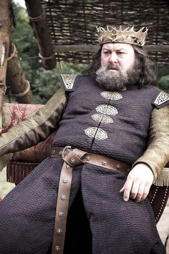
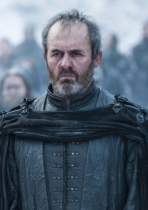
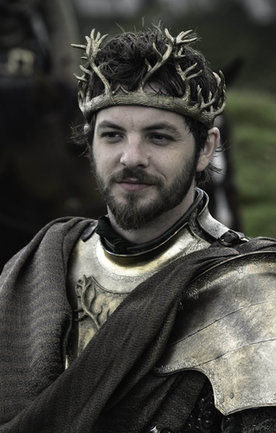
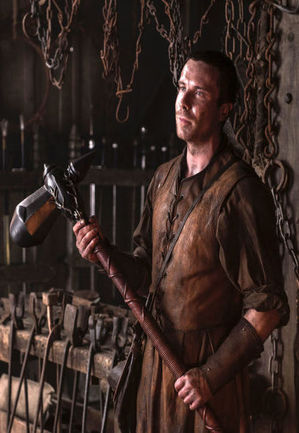
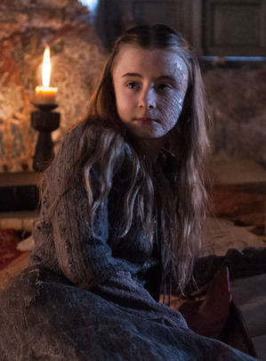
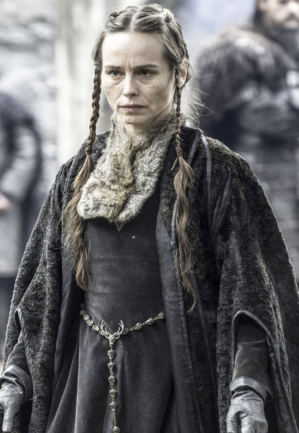
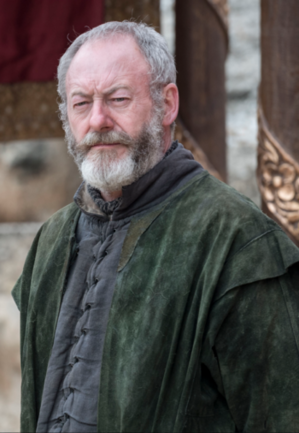

| Nom | Image | Biographie |
|---|---|---|
| Robert I Baratheon |  |
Interprète Mark Addy Saison(s) 1 Titre(s) Roi des Andals et des Premiers Hommes Seigneur des Sept Couronnes Protecteur du Royaume Alias Robert de la maison Baratheon, premier du nom L'Usurpateur Statut Décédé Mort Mortellement blessé par un sanglier après avoir bu du vin donné par Lancel Lannister, sur ordre de Cersei Lannister Origine Accalmie Allégeance Maison Baratheon Culture Andals Religion Foi des Sept Relation Cersei Lannister - femme Lyanna Stark - fiancée (anciennement) † Parents Steffon Baratheon - père † Cassana Baratheon - mère † Enfant(s) Fils (avec Cersei) mort en bas âge † Joffrey Baratheon - fils présumé (beau-fils) † Myrcella Baratheon - fille présumée (belle-fille) † Tommen Baratheon - fils présumé (beau-fils) † Bâtard Gendry - fils inavoué Barra - fille inavouée † Autres bâtards Fratrie Stannis Baratheon - frère † Renly Baratheon - frère † |
| Stannis Baratheon |  |
Interprète Stephen Dillane Saison(s) 2, 3, 4, 5 Titre(s) Seigneur de Peyredragon(contestée) Stannis de la Maison Baratheon, le Premier du nom Roi des Andals et des Premiers Hommes (prétendant) Seigneur des Sept Couronnes(prétendant) Protecteur du Royaume(prétendant) Alias Guerrier de la Lumière Élu du Seigneur Fils de feu Statut Décédé Mort Exécuté par Brienne de Torth Origine Accalmie Allégeance Maison Baratheon de Peyredragon Maison Baratheon d'Accalmie Religion R'hllor Culture Andals Relation Selyse Baratheon - femme † Parents Steffon Baratheon † Cassana Baratheon † Enfant(s) Shireen Baratheon - fille † Petyr Baratheon - fils mort-né † Tommard - fils mort-né † Edric Baratheon - fils mort-né Fratrie Robert Baratheon † Renly Baratheon † |
| Renly Baratheon |  |
Interprète Gethin Anthony Saison(s) 1, 2 Titre(s) Seigneur d'Accalmie Renly de la Maison Baratheon, le Premier du nom Roi des Andals et des Premiers Hommes (prétendant) Seigneur des Sept Couronnes (prétendant) Protecteur du Royaume (prétendant) Alias Le Roi de Hautjardin Statut Décédé Mort Poignardé par une ombre maléfique de Stannis Baratheon Origine Accalmie Allégeance Maison Baratheon Religion Anciens dieux Foi des Sept Culture Andals Religion Foi des Sept Relation Margaery Tyrell - femme † Loras Tyrell - amant † Parents Steffon Baratheon - père † Cassana Baratheon - mère † Enfant(s) Enfant à naître † Fratrie Robert Baratheon - frère † Stannis Baratheon - frère † |
| Gendry Baratheon |  |
Interprète Joe Dempsie Saison(s) 1, 2, 3, 7 Alias Clovis Statut Vivant Origine Culpucier, Port-Réal Allégeance Jon Snow Religion La Foi des Sept Parents Robert Baratheon - père † Mère inconnue † Fratrie Barra - demi-sœur † |
| Shireen Baratheon |  |
Interprète Kerry Ingram Saison(s) 3, 4, 5 Titre(s) Princesse Statut Décédée Mort Brûlée vive par Melisandrecomme sacrifice au Seigneur de la Lumière Origine Peyredragon Allégeance Maison Baratheon de Peyredragon Culture Andals Parents Stannis Baratheon - père † Selyse Baratheon - mère † Fratrie Petyr - frère mort-né † Tommard - frère mort-né † Edric - frère mort-né † |
| Selyse Baratheon |  |
Interprète Tara Fitzgerald (saison 3, 4, 5) Sarah MacKeever (saison 2) Saison(s) 2, 3, 4, 5 Titre(s) Reine Alias Selyse Florent Statut Décédée Mort Suicide par pendaison Origine Rubriant Allégeance Maison Baratheon de Peyredragon Maison Florent Religion R'hllor Culture Andal Relation Stannis Baratheon - mari † Enfants Shireen Baratheon - fille † Petyr Baratheon - fils mort-né † Tommard Baratheon - fils mort-né † Edric Baratheon - fils mort-né † Fratrie Imry Florent - frère Axell Florent - frère † |
| Davos Mervault |  |
Interprète Liam Cunningham Saison(s) 2, 3, 4, 5, 6, 7, 8 Titre(s) Ser Main du Roi (sous Stannis; autrefois) Alias Le Chevalier Oignon Statut Vivant Origine Quartier de Culpucier, Port-Réal Allégeance Maison Mervault Maison Stark Maison Baratheon de Peyredragon (anciennement) Religion Aucune Relation Marya Mervault - femme Fratrie Matthos Mervault - fils † |
| Mélisandre |  |
Interprète Carice van Houten Saison(s) 2, 3, 4, 5, 6, 7 Titre(s) Prêtresse du feu Alias Mélisandre d'Asshaï La femme rouge Lady Mélisandre Statut Vivante Origine Asshaï Allégeance Maison Baratheon de Peyredragon (anciennement) Jon Snow (anciennement) Maison Targaryen R'hllor Religion R'hllor Culture Asshaï |